Track3P tutorials¶
Six worked examples from examples/track3p. The first four are from the CW18 workshop; the last two were added for CW23 and exist only in the group copy of the examples at /sdf/group/rfar/ace3p/cw23/examples/track3p. Each requires a field solution first, so the Omega3P or S3P step is shown briefly and the Track3P step in full. Meshing and acdtool meshconvert are covered in the Omega3P pillbox tutorial.
Tutorial 1: pillbox cavity multipacting scan¶
Example directory: examples/track3p/Pillbox
The same rounded pillbox as the Omega3P tutorials, here as a full 360 degree model rather than a quarter, scanned from 23 to 25 MV/m for multipacting.
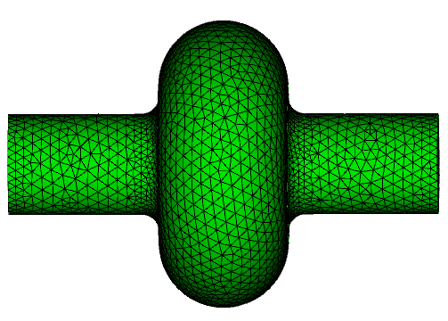
Step 1: Fields from Omega3P¶
ModelInfo : {
File: ./Pillbox.ncdf
BoundaryCondition : {
Exterior: 1, 2, 6
}
SurfaceMaterial : {
ReferenceNumber: 6
Sigma: 5.8e7
}
}
FiniteElement: {
Order: 2
CurvedSurfaces: on
}
EigenSolver : {
NumEigenvalues: 2
FrequencyShift: 1.0e9
}
Sidesets 1 and 2 are the beam pipe ends and 6 is the wall. All three are Exterior here because this is a full model with no symmetry planes. Omega3P finds TM010 at 1.31381 GHz and, because nothing suppresses dipoles in a full model, the first dipole mode at 1.74993 GHz as mode 2. Track3P loads mode 0 by default (Domain.ModeID1), so the dipole mode is computed but unused.
Mode file is required
Track3P reads the .mod field file, so the PostProcess block in the Omega3P input must be on, or omitted so that the default applies. If Omega3P was run with PostProcess: { Toggle: off }, rerun it.
Step 2: Multipacting scan¶
FieldScales: {
Type: FieldGradient
ScanToken: 1
Minimum: 23.0e+6
Maximum: 25.0e+6
Interval: 1.0e+6
}
NormalizedField: {
StartPoint: 0.0 0.0 -0.057
EndPoint: 0.0 0.0 0.057
}
Domain: {
FieldDir: ./omega3p_results
}
Emitter: {
BoundaryID: 6
x0: 0.03 x1: 0.035
y0: 0.04 y1: 0.1
z0: -0.045 z1: 0.0
}
Material: { Type: Primary BoundarySurfaceID: 6 }
Material: { Type: Secondary BoundarySurfaceID: 6 }
Material: { Type: Absorber BoundarySurfaceID: 1 2 }
OutputImpacts: on
Postprocess: {
Toggle: on
ResonantParticles: { Token: on }
EnhancementCounter: {
Token: on
MinimumEC: 0.01
SEYFileName1: copper.dat
BoundarySurfaceID1: 6
}
}
The emitter box restricts launch sites to a patch of the cavity wall near the equator, which keeps the run short. The normalization line spans the 90 mm cavity length, plus a little, so that the scan levels are accelerating gradients in the usual sense. The beam pipe ends absorb.
Run it with 16 threads on one rank; the three levels finish in about two minutes:
The end of track3p.log reports the scale factor applied to the normalized Omega3P field at each level:
number of all emitting faces = 16
scale 1.144609569160e+06 Field 2.300000000000e+07
scale 1.194375202602e+06 Field 2.400000000000e+07
scale 1.244140836043e+06 Field 2.500000000000e+07
Done!
Step 3: Read the results¶
OUTPUT/resonantparticles has one row per resonant impact:
Field_Level ID Resonant_X Resonant_Y Resonant_Z Energy Initial_X Initial_Y Initial_Z Total_time Total_Num
2.30000e+07 16100 4.73236e-02 8.80929e-02 7.68720e-05 1.47562e+01 3.16915e-02 5.95758e-02 -4.32326e-02 1.98753e+01 39
2.30000e+07 16100 4.71849e-02 8.81666e-02 -1.84656e-04 1.43454e+01 3.16915e-02 5.95758e-02 -4.32326e-02 1.98753e+01 39
Particle 16100 launched from (31.7, 59.6, -43.2) mm and is now bouncing across the equator at z near zero with about 15 eV per impact, having made 39 impacts in 19.9 RF cycles. That is a two-point, first-order trajectory. Hundreds of such rows per level make up the map.
OUTPUT/enhancementCounter weighs each resonant particle by the copper SEY:
fieldlevel ID enhancement averageEnhancement maxEnhancement maxEnhancementImpactNum totalImpactNum
2.30000e+07 2300 1.13300e+00 1.06442e+00 1.27139e+00 1 2
The multipacting map¶
Plot impact energy against field level, either with the resonant ParaView macro or with a short script. The scan covers only three levels so the "map" is three columns, but the structure is clear: distinct bands of impact energy at each level corresponding to different trajectory families.
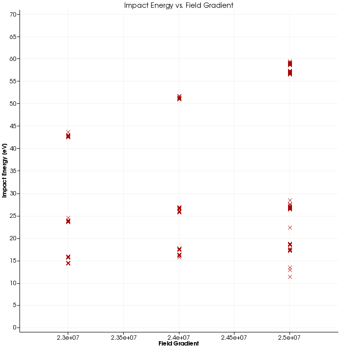
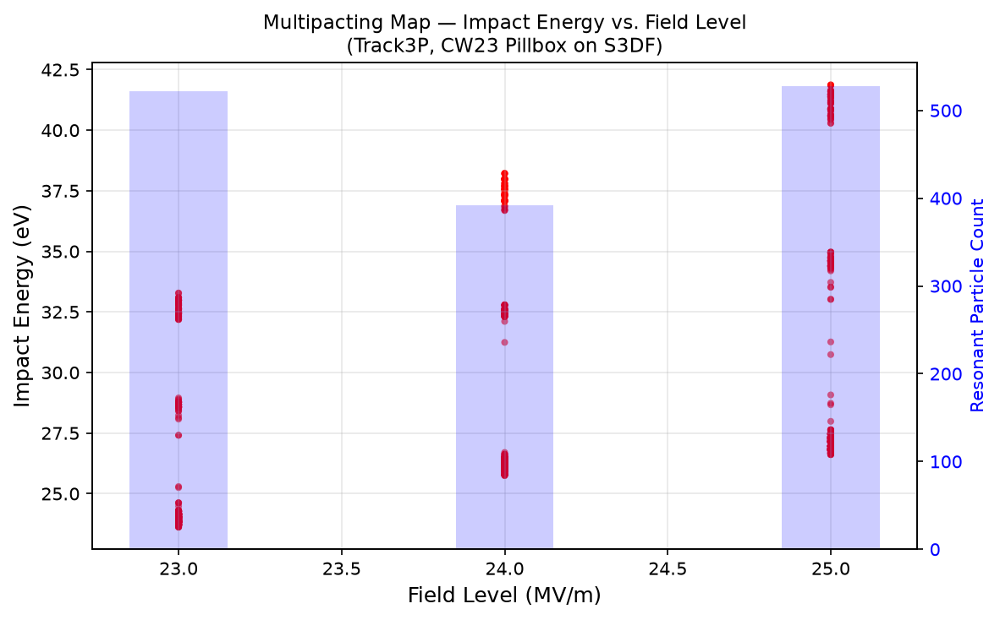
Left: the 2016 Track3P build used for the CW18 workshop. Right: the same input rerun in July 2026 on S3DF with the current build, plotted with the workflow project's matplotlib script. Bars show resonant particle count per level.
The two runs agree on the qualitative picture but not on the numbers, and that is worth dwelling on. The 2016 run found resonant impacts up to 84 eV; the 2026 run tops out at 42 eV. Resonant particle counts dropped from 642, 518, 642 to 522, 392, 528 across the three levels. Ten years of development separate the two binaries, and the trajectory integrator, impact detection, and resonance criteria have all changed. Treat numbers in old tutorial material as illustrations of the method, not as reference values, and when a result matters, establish your own baseline with the build you are using.
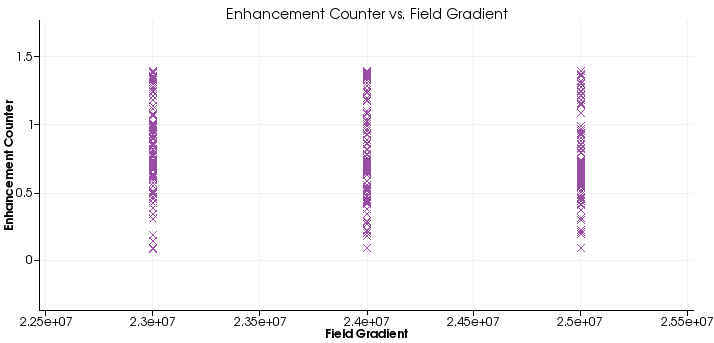
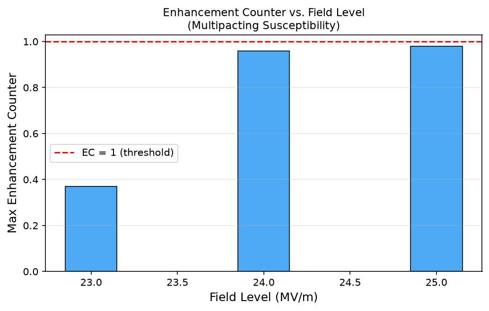
Enhancement counter against field level. The 2016 run shows a spread of EC values per level reaching 1.4. The 2026 run, summarized as the maximum per level, stays below 1.0 everywhere.
The consequence of the lower impact energies in the newer run is visible in the enhancement counter. Copper's SEY crosses 1.0 near 300 eV, so impacts at 15 to 40 eV have SEY of about 0.1 to 0.3 and the product over many impacts is small. The newer build predicts no sustained multipacting for copper in this range; the older build predicted a soft barrier. Resolving which is right requires comparison against measurement, which is why the ICHIRO benchmark on the module page matters.
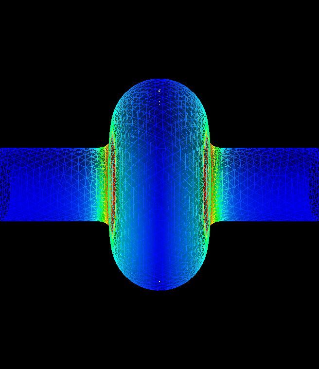
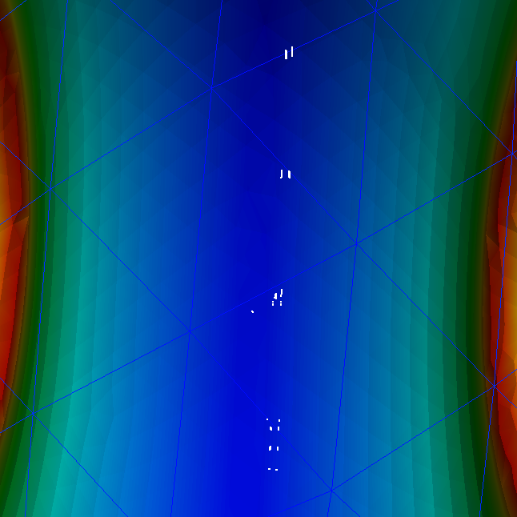
The resonant macro also marks impact sites on the model. They cluster on the equator, as expected for two-point multipacting in a pillbox.
Step 4: Trajectories at one field level¶
To see what the particles are doing, rerun at a single level with trajectory output. Pillbox2.3MV.track3p differs from the scan input only in the FieldScales block:
Give the run its own results directory so it does not overwrite the scan:
This writes 2.3MV/PARTICLES/partpath_ts*.ncdf, one file per time step. In ParaView, load mesh, mode file, and the particle file series through the SLAC toolbar, then press Play.
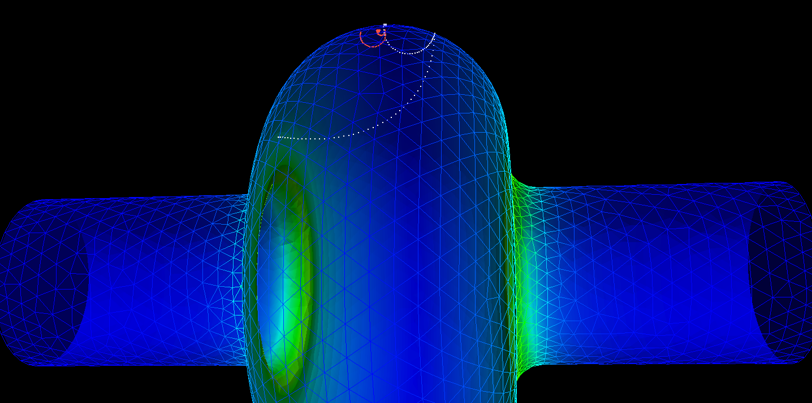
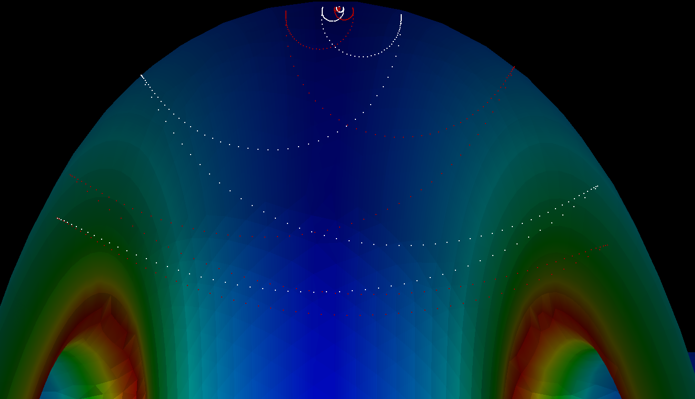
Two particles tracked from the wall to the equator, where they settle into tight two-point orbits.
Step 5: acdtool post-processing¶
acdtool postprocess track3p recomputes the enhancement counter from the impact data with a different SEY file, so one tracking run can be evaluated for several surfaces, and extracts individual trajectories as text:
EnhancementCounter: {
Token : on
SEYFileName1 : copper.dat
SEYFileName2 : copper.dat
BoundarySurfaceID1 : 6
BoundarySurfaceID2 : 6
SolidVolID : 0
MinimumEC : 0.01
OutputFile : en
}
Trajectory: {
Token : on
ParticleID : 16100 15400
}
The enhancement counter goes to 2.3MV/en. Each trajectory goes to a file named by particle ID in the working directory, as rows of step number and position, ready for any plotting tool or for the trajectory ParaView macro.
Tutorial 2: RF window with dielectric emission¶
Example directory: examples/track3p/Window
The alumina window from the S3P tutorials, now checked for multipacting. Windows are a classic multipacting site because electrons can be emitted from the ceramic surface as well as the metal, and because the traveling-wave field pattern differs from a standing wave.
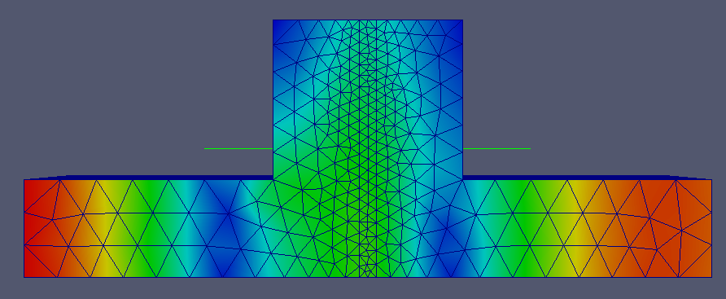
Fields from S3P¶
S3P is run at the single operating frequency, 2.856 GHz, with the same input as the S3P window tutorial except Start equals End. The result is s3p_results/s3p.port7.mode0.f2.856000000E+09.mod, the field for excitation from port 7.
Three emission configurations¶
The example has three input files that differ only in the Emitter blocks. The one that emits from both regions:
TotalTime: 2
FieldScales: {
Type: InputPortPower // S3P field: scale by input power
ScanToken: 0
Scale: 8.0e+06 // 8 MW
}
Emitter: { // from the ceramic surface
Type: 5
x0: 0.0 x1: 0.045
y0: 0.0 y1: 0.045
z0: -0.002 z1: 0.0
BoundaryID: 6
}
Emitter: { // from the metal wall
Type: 2
x0: 0.001 x1: 0.045
y0: 0.001 y1: 0.045
z0: 0.0 z1: 0.06
BoundaryID: 6
}
Material: { Type: Primary BoundarySurfaceID: 6 }
Material: { Type: Primary SolidBlockID: 2 }
Material: { Type: Absorber BoundarySurfaceID: 1 2 7 8 }
Material: { Type: Secondary BoundarySurfaceID: 6 }
Material: { Type: Secondary SolidBlockID: 2 }
Domain: {
Bins: 128
SolidRegion: 2 // ceramic block
VacuumRegion: 1
FieldDir: ./s3p_results
}
OutputImpacts: off
Three things are new here:
InputPortPowerscaling. With an S3P field, "field level" is naturally the drive power.Scale: 8.0e+06is 8 MW incident at port 7.- Emitter
Type: 5for the dielectric surface. The emitter boxz0: -0.002, z1: 0.0selects the ceramic face.Domainmust declare which block isSolidRegionand which isVacuumRegionso Track3P knows which side of the surface is inside the dielectric. Materialblocks keyed bySolidBlockIDrather than by boundary surface, assigning primary and secondary emission to the ceramic volume's surfaces.
Run each configuration into its own directory:
srun -n 1 -c 16 track3p Window-SolidEmission.track3p track3p_solid
srun -n 1 -c 16 track3p Window-VacuumEmission.track3p track3p_vacuum
srun -n 1 -c 16 track3p Window-Solid+VacuumEmission.track3p track3p_solid_vacuum
With ScanToken: 0, each run writes PARTICLES/partpath_ts*.ncdf for animation. The example directories include the resulting movies.
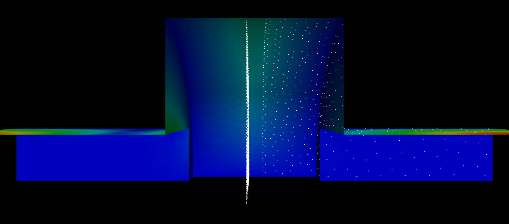
Particles emitted from the ceramic face (dense column at center) and from the metal walls (scattered points), in the traveling-wave field at 8 MW.
Tutorial 3: external magnetic field¶
Example directory: examples/track3p/Muon201MHz
A 201 MHz cavity for muon ionization cooling operates inside a solenoid. The magnetic field bends electron trajectories and changes which ones are resonant, so multipacting must be evaluated with the external field present. Track3P accepts either a uniform field or a tabulated map.
The Omega3P input for this cavity has two features not seen earlier: two surface materials with different conductivity, since the end walls (sidesets 3 and 4) are beryllium windows rather than copper, and waveguide boundaries on the coupler ports (7 and 8).
Three runs¶
The three input files share everything except the Domain block:
TotalTime: 50
FieldScales: {
Type: FieldGradient
ScanToken: 1
Minimum: 1.0e6
Maximum: 16.0e6
Interval: 1.0e6
}
NormalizedField: {
StartPoint: 0.0 0.0 -0.18032
EndPoint: 0.0 0.0 0.23657
Beta: 1.0
}
Emitter: {
x0: 0.4 x1: 0.65
y0: 0.0 y1: 1.136
z0: -0.25 z1: 0.25
BoundaryID: 6
}
Material: { Type: Primary BoundarySurfaceID: 6 }
Material: { Type: Secondary BoundarySurfaceID: 3 4 6 }
Material: { Type: Absorber BoundarySurfaceID: 7 8 }
OutputImpacts: on
Postprocess: {
Toggle: on
ResonantParticles: {
InitialImpacts: 2
EnergyRange: 50 3000
Token: on
}
}
A 16-level scan over 50 RF cycles each is a substantial run; use several MPI ranks. The Domain block for each case:
The LowEnergy and HighEnergy cutoffs are raised to 50 eV and 3 keV here, and EnergyRange in ResonantParticles matches them. Low-energy impacts below the SEY crossover are not interesting for this cavity and dropping them early saves time.
Compare the maps¶
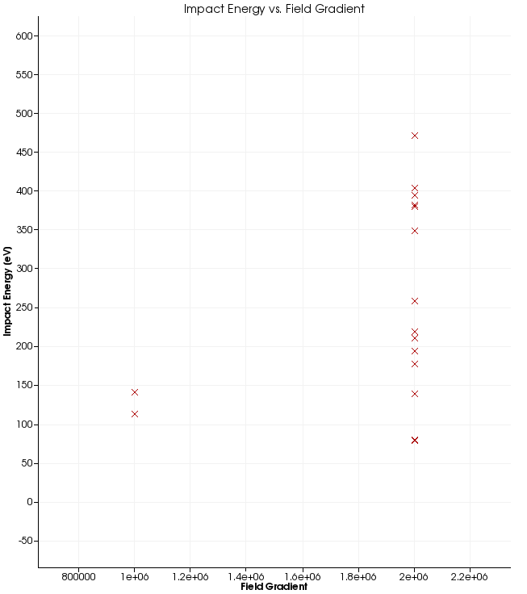
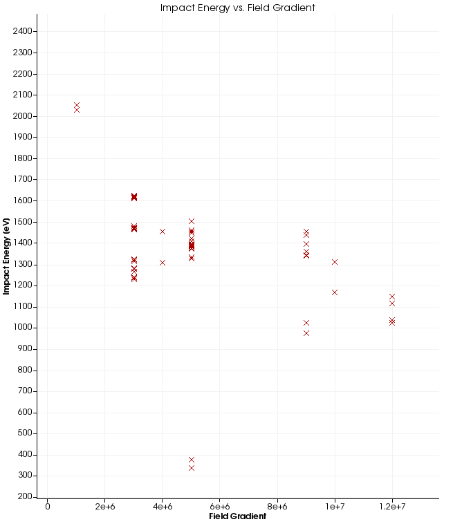
Impact energy versus gradient without external field (left) and in a uniform 3 T solenoid field (right). Note the very different energy scales.
Without the magnetic field, resonant particles appear only at 1 and 2 MV/m with impact energies up to about 470 eV. With 3 T, they appear across the whole scan up to 12 MV/m, with impact energies of 1 to 2 keV, well into the range where copper's SEY exceeds one. The solenoid field confines electrons to tight helices along field lines, which makes resonance far easier to satisfy. This is the known multipacting problem of cooling-channel cavities, and the example reproduces it.
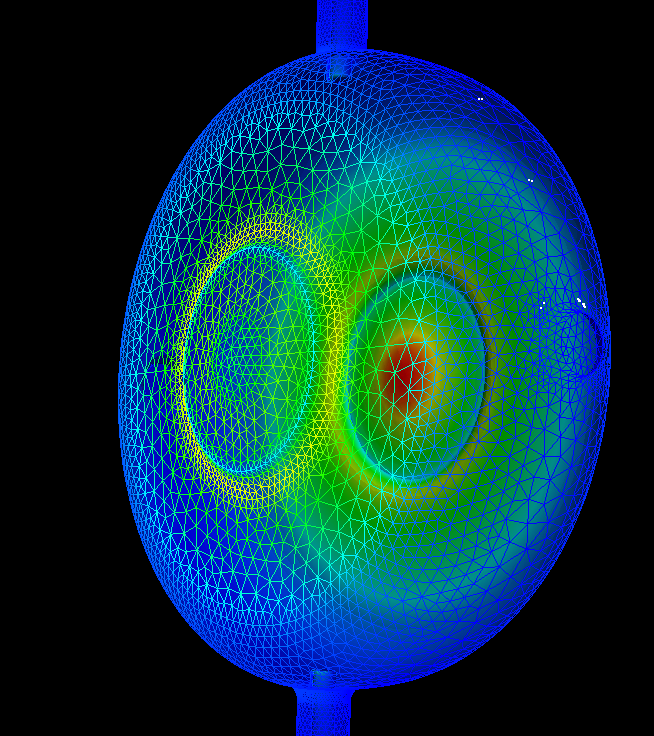
Resonant impact sites on the cavity, no external field. Sites cluster around the beryllium window and the coupler iris.
The example directory contains the corresponding plots for all three cases as RF-N, RF-3T, RF-M (impact energy) and RL-N, RL-3T, RL-M (locations).
Tutorial 4: dark current in a Tesla cavity¶
Example directory: examples/track3p/Tesla
Dark current is field-emitted electrons from high-field regions of the wall, accelerated through the cavity and lost downstream or on the walls. Track3P models the emission with the Fowler-Nordheim law and, optionally, secondary emission at impacts.
Fowler-Nordheim emission¶
The current density from a metal surface with work function \(\phi\) in eV under a field \(E\) enhanced by a geometric factor \(\beta\) is
Track3P converts \(J\) into a number of electrons per emitting face per time step. Typical \(\beta\) for a real cavity surface is 50 to 200; the example uses 120 with the copper work function.
Primary emission only¶
ParticlesTrajectories: {
Skip: 2 // save every other step
}
TotalTime: 6
FieldScales: {
Type: FieldGradient
ScanToken: 0
Scale: 16.00e+6 // 16 MV/m
}
NormalizedField: {
StartPoint: 0.0 0.0 0.0
EndPoint: 0.0 0.0 1.036200 // full 9-cell length
}
Domain: {
FieldDir: ./omega3p_results
Bins: 640 // long structure: finer binning
MaxImpacts: 2 // drop particles after two impacts
}
Emitter: {
Type: 7 // FieldEmission
BoundaryID: 6
t0: 0
t1: 1
x0: 0.0 x1: 0.104
y0: 0.0 y1: 0.104
z0: 0.0 z1: 0.114 // first cell only
N: 1000
WorkFunction: 4.2
Beta: 120
}
Material: { Type: Primary BoundarySurfaceID: 6 }
Material: { Type: Secondary BoundarySurfaceID: 6 }
Material: { Type: Absorber BoundarySurfaceID: 1 2 }
OutputImpacts: on
Bins: 640 matters here. The default of 64 is tuned for a compact cavity; a one-meter structure with fine irises needs many more bins for particle localization to be efficient. MaxImpacts: 2 keeps the run to primaries and their first bounce, since secondaries are switched off by the absence of a Model: 2 secondary material.
Run with the results directory named explicitly:
With secondary emission and Faraday cups¶
Tesla-SEmission.track3p adds a dark-current secondary model and surface monitors:
Material: {
Type: Secondary
BoundarySurfaceID: 6
Model: 2 // dark-current secondary emission
// inline SEY table for niobium
Sigma0: 0.0 0.972 1.13 1.222 1.439 1.478 1.486 1.442 1.378 1.314 1.258 1.214 1.167 1.125 1.092 1.061 1.033 1.011 0.986 0.967 0.944 0.931 0.5
Einit: 0.0 50 75 100 200 300 400 500 600 700 800 900 1000 1100 1200 1300 1400 1500 1600 1700 1800 1900 1e12
MinimumNumElectrons: 1000
ElasticThreshold: 1000
}
Postprocess: {
Toggle: on
ResonantParticles: { Token: off }
FaradayCup: {
Token: on
BoundaryID: 6 1 2
}
}
Model: 2 enables the dark-current secondary model: true secondaries following a Lye-Dekker yield curve given inline by Sigma0 against Einit, plus elastic reflection when a macroparticle carries more than ElasticThreshold electrons. MinimumNumElectrons prunes macroparticles that have shrunk below that count.
The FaradayCup post-processor writes every impact on each listed surface to OUTPUT/faradaycup_<id>, in the same column format as ImpactsInfo. Surfaces 1 and 2 are the beam pipe ends, so faradaycup_1 and faradaycup_2 are the dark current leaving the cavity upstream and downstream, which is what a real Faraday cup would measure. These files are the input to X-ray and radiation estimates.
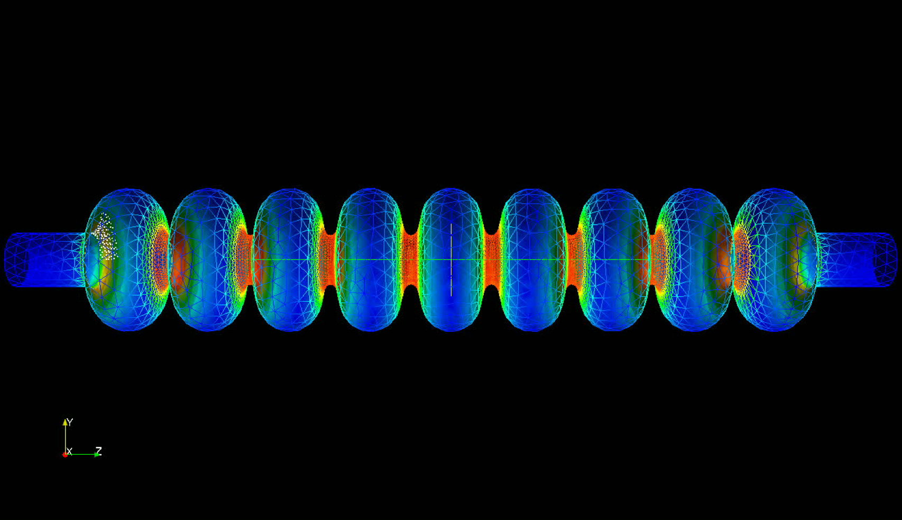
Particles emitted from the first cell at 16 MV/m, tracked through the 9-cell Tesla cavity with secondary emission on. The white cluster at left is the emission site; particles that reach the far end are captured in the Faraday cup output.
Scaling up: a cryomodule¶
The same input pattern extends to an entire LCLS-II cryomodule of eight 9-cell cavities, 10.96 m long, with 1.5 million particles emitted on the first RF cycle and tracked for 50 cycles. The mesh is refined at the irises, and a convergence check between 303 thousand and 1.45 million elements confirms the dark current loss map.
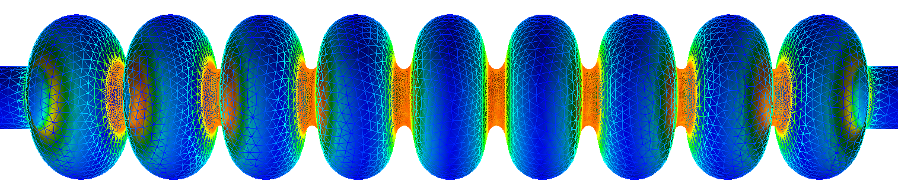
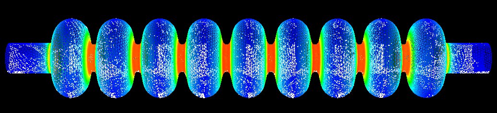
Pi-mode field at 1.2999669 GHz across one cavity of the cryomodule, and a snapshot of dark current particles tracked through it.
A run of this size is where the Track3P parallel model pays off: with no inter-rank communication it scales linearly in particles, and the 7-minute figure quoted on the module page is for this class of problem.
Tutorial 5: dark current in a traveling-wave structure¶
Example directory: examples/track3p/TW7Cell (CW23 group copy)
A 7-cell S-band traveling-wave structure with input and output couplers. Unlike the standing-wave Tesla cavity, the field here comes from an S3P run at the operating frequency, and the structure is a half model, which introduces the symmetry-plane material.
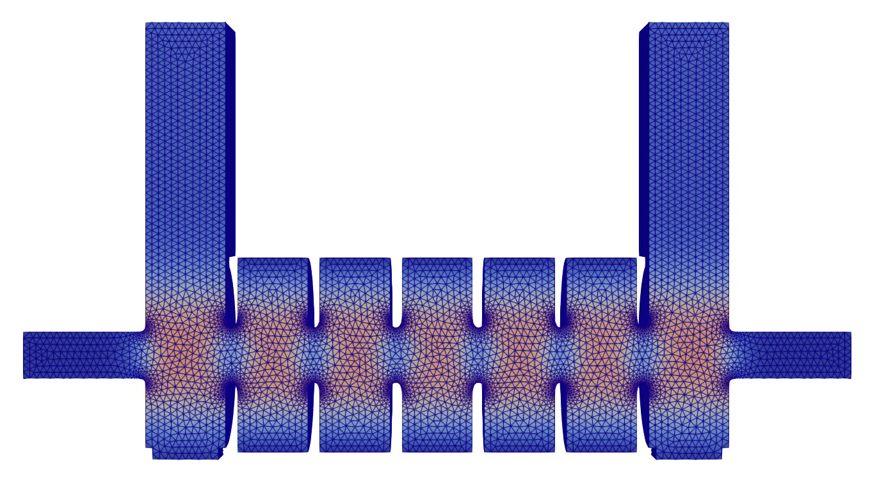
Fields from S3P¶
ModelInfo : {
File: TW7Cell.ncdf
BoundaryCondition : {
Waveguide: 1 2 // input and output couplers
Exterior: 6
Magnetic: 3 4 5 // 5 is the symmetry plane
}
}
FiniteElement: { Order: 2 CurvedSurfaces: on }
FrequencyScan: { Start: 2.8566e+9 End: 2.8566e+9 Interval: 0.0001e+9 }
PostProcess: { Toggle: on PortNumber: 1 }
Port: { ReferenceNumber: 1 NumberOfModes: 1 }
Port: { ReferenceNumber: 2 NumberOfModes: 1 }
A single frequency, 2.8566 GHz, with the field saved for excitation from port 1. The stored S3P result shows the structure is well matched: |S11| is 0.0045 and |S21| is 0.99999, so essentially all power travels through.
Track3P input¶
ParticlesTrajectories: { Skip: 10 }
TotalTime: 5
FieldScales: {
Type: FieldGradient
ScanToken: 0
Scale: 21.6e+6
}
NormalizedField: {
StartPoint: 0.0 0.0 -0.087275
EndPoint: 0.0 0.0 0.087675
}
Domain: {
FieldDir: ./s3p_results
Bins: 128
MaxImpacts: 2
SymmetryFactor: 2 // half model
SymmetryPlane: 5 // its sideset
}
Emitter: {
Type: 7 // Fowler-Nordheim
BoundaryID: 6
t0: 0 t1: 1
x0: 0.0 x1: 0.04
y0: -0.017 y1: 0.017
z0: -0.02 z1: -0.01 // one iris region
N: 100
WorkFunction: 4.2
Beta: 50
}
Material: { Type: Primary BoundarySurfaceID: 6 }
Material: { Type: Secondary BoundarySurfaceID: 6 }
Material: { Type: SymmetryPlane BoundarySurfaceID: 5 }
Material: { Type: Absorber BoundarySurfaceID: 1 2 3 4 }
OutputImpacts: on
Postprocess: {
Toggle: on
FaradayCup: { Token: on BoundaryID: 3 4 6 }
}
Three things differ from the Tesla case:
- Traveling-wave field.
FieldDirpoints ats3p_results, and the gradient normalization line spans the whole structure. The field pattern is a traveling wave, so emitted electrons see a phase that depends on where they start along z. - Symmetry plane. Sideset 5 is given
Material: { Type: SymmetryPlane }andDomaindeclaresSymmetryFactor: 2andSymmetryPlane: 5. Particles reaching the plane reflect, and the Faraday cup totals are scaled to the full structure. WithAbsorberon this plane, half the real trajectories would be lost. - Enhancement factor 50, lower than the Tesla example's 120. Emission is restricted to one iris region by the emitter box.
Results¶
The Faraday cup files record where the dark current goes:
| Surface | Primary emission only | With copper secondaries |
|---|---|---|
| 3, upstream pipe end | 146 impacts | 22,944 |
| 4, downstream pipe end | 9 | 28,173 |
| 6, structure wall | 35,450 | 2,336,484 |
With primaries alone, almost everything emitted from the iris lands back on the wall within the same cell or the next. Turning on the copper secondary-emission model (Model: 2 with the copper Sigma0 and Einit table, in TW7Cell-SEmission.track3p) multiplies the impacts on the wall by 66 and the current reaching the beam-pipe ends by over a hundred, because each wall impact spawns secondaries that are accelerated onward. The two runs bracket the real dark current; the surface condition decides where between them the structure sits.
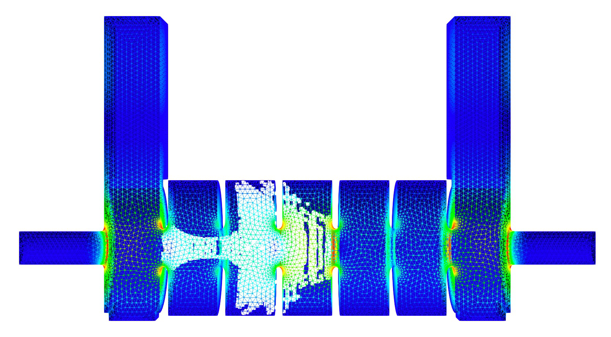
Particles with secondary emission on, concentrated in the second and third cells downstream of the emission site.
The SEmission input also lowers MinimumNumElectrons and ElasticThreshold to 10, from 1000 in the Tesla example, so that macroparticles carrying fewer electrons survive; with N: 10 electrons per emitted macroparticle the Tesla thresholds would prune everything immediately.
Tutorial 6: combining a static field from Gun3P¶
Example directory: examples/track3p/Coax-StaticField (CW23 group copy)
A coaxial line with a dielectric section, carrying both an RF wave from S3P and a DC bias computed by Gun3P. Track3P can superimpose the two.
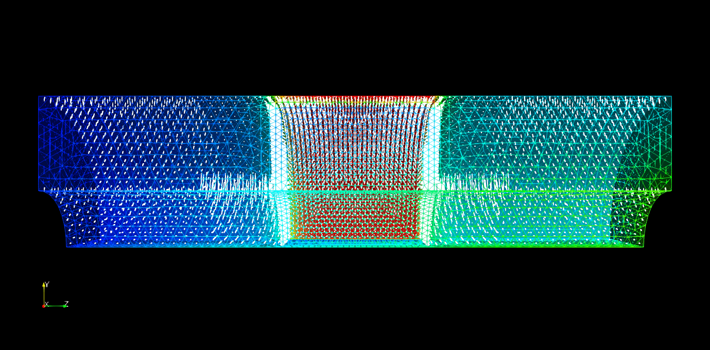
Particles emitted from the coax walls and the dielectric surface, tracked in the RF plus static field. The dielectric section is at center.
Three solvers¶
- S3P on
Coax-s3p.ncdffor the RF field at the drive frequency. - Gun3P on
Coax-gun3p.ncdfas a pure electrostatic solver, withMaxIterations: 0so no particles are emitted, andElectrostaticFieldToken: OninOutputswith aFileNameandNx,Ny,Nz. Thengun3pOutputConverter Coax-gun3p.in ewrites the field on that Cartesian grid togun3p_results/OUTPUT/E/test-101.txt. - Track3P reads both:
FieldScales: {
Type: InputPortPower
ScanToken: 0
Scale: 5 // W
}
Domain: {
FieldDir: ./s3p_results
SolidRegion: 2
VacuumRegion: 1
ElectroStaticFieldMap: {
File: ./gun3p_results/OUTPUT/E/test-101.txt
Scaling: 1.0
}
}
Emitter: { Type: 2 BoundaryID: 5 6 ... } // metal walls
Emitter: { Type: 5 BoundaryID: 5 6 ... } // dielectric surface
ElectroStaticFieldMap.File is the converter's text output and Scaling multiplies it, so one Gun3P solve at a reference voltage serves a scan of bias values. Note the key is spelled ElectroStaticFieldMap with a capital S inside, as the source reads it. The grid file is interpolated trilinearly onto particle positions and added to the RF field at every step.
This is the pattern for any device with a DC bias on an RF structure: a biased window, a DC-suppressed multipacting coupler, or an electron gun with an RF buncher.